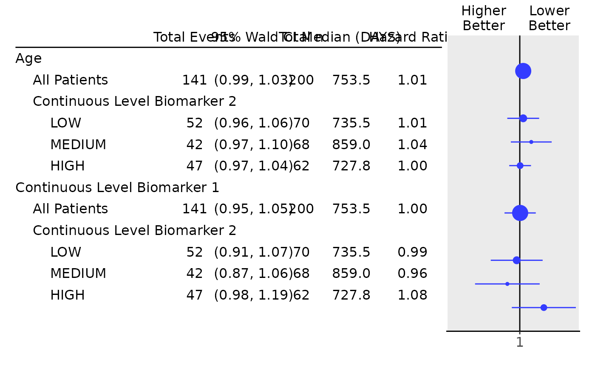

Tabulate Biomarker Effects on Survival by Subgroup
Source:R/survival_biomarkers_subgroups.R
survival_biomarkers_subgroups.Rd![[Stable]](figures/lifecycle-stable.svg)
Tabulate the estimated effects of multiple continuous biomarker variables across population subgroups.
Usage
tabulate_survival_biomarkers(
df,
vars = c("n_tot", "n_tot_events", "median", "hr", "ci", "pval"),
groups_lists = list(),
control = control_coxreg(),
label_all = "All Patients",
time_unit = NULL,
na_str = default_na_str(),
.indent_mods = 0L
)Arguments
- df
(
data.frame)
containing all analysis variables, as returned byextract_survival_biomarkers().- vars
(
character)
the names of statistics to be reported among:n_tot_events: Total number of events per group.n_tot: Total number of observations per group.median: Median survival time.hr: Hazard ratio.ci: Confidence interval of hazard ratio.pval: p-value of the effect. Note, one of the statisticsn_totandn_tot_events, as well as bothhrandciare required.
- groups_lists
(named
listoflist)
optionally contains for eachsubgroupsvariable a list, which specifies the new group levels via the names and the levels that belong to it in the character vectors that are elements of the list.- control
(
list)
a list of parameters as returned by the helper functioncontrol_coxreg().- label_all
(
string)
label for the total population analysis.- time_unit
(
string)
label with unit of median survival time. DefaultNULLskips displaying unit.- na_str
(
string)
string used to replace allNAor empty values in the output.- .indent_mods
(named
integer)
indent modifiers for the labels. Defaults to 0, which corresponds to the unmodified default behavior. Can be negative.
Details
These functions create a layout starting from a data frame which contains the required statistics. The tables are then typically used as input for forest plots.
Functions
tabulate_survival_biomarkers(): Table-creating function which creates a table summarizing biomarker effects on survival by subgroup.
Note
In contrast to tabulate_survival_subgroups() this tabulation function does
not start from an input layout lyt. This is because internally the table is
created by combining multiple subtables.
See also
h_tab_surv_one_biomarker() which is used internally, extract_survival_biomarkers().
Examples
library(dplyr)
adtte <- tern_ex_adtte
# Save variable labels before data processing steps.
adtte_labels <- formatters::var_labels(adtte)
adtte_f <- adtte %>%
filter(PARAMCD == "OS") %>%
mutate(
AVALU = as.character(AVALU),
is_event = CNSR == 0
)
labels <- c("AVALU" = adtte_labels[["AVALU"]], "is_event" = "Event Flag")
formatters::var_labels(adtte_f)[names(labels)] <- labels
# Typical analysis of two continuous biomarkers `BMRKR1` and `AGE`,
# in multiple regression models containing one covariate `RACE`,
# as well as one stratification variable `STRATA1`. The subgroups
# are defined by the levels of `BMRKR2`.
df <- extract_survival_biomarkers(
variables = list(
tte = "AVAL",
is_event = "is_event",
biomarkers = c("BMRKR1", "AGE"),
strata = "STRATA1",
covariates = "SEX",
subgroups = "BMRKR2"
),
data = adtte_f
)
df
#> biomarker biomarker_label n_tot n_tot_events median hr
#> 1 BMRKR1 Continuous Level Biomarker 1 200 141 753.5176 1.0010939
#> 2 AGE Age 200 141 753.5176 1.0106406
#> 3 BMRKR1 Continuous Level Biomarker 1 70 52 735.4722 0.9905065
#> 4 AGE Age 70 52 735.4722 1.0106279
#> 5 BMRKR1 Continuous Level Biomarker 1 68 42 858.9952 0.9623210
#> 6 AGE Age 68 42 858.9952 1.0360765
#> 7 BMRKR1 Continuous Level Biomarker 1 62 47 727.8043 1.0770946
#> 8 AGE Age 62 47 727.8043 1.0009890
#> lcl ucl conf_level pval pval_label subgroup var
#> 1 0.9538978 1.050625 0.95 0.9646086 p-value (Wald) All Patients ALL
#> 2 0.9871004 1.034742 0.95 0.3787395 p-value (Wald) All Patients ALL
#> 3 0.9142220 1.073156 0.95 0.8155443 p-value (Wald) LOW BMRKR2
#> 4 0.9621192 1.061582 0.95 0.6735773 p-value (Wald) LOW BMRKR2
#> 5 0.8708694 1.063376 0.95 0.4509368 p-value (Wald) MEDIUM BMRKR2
#> 6 0.9727439 1.103532 0.95 0.2707796 p-value (Wald) MEDIUM BMRKR2
#> 7 0.9756250 1.189118 0.95 0.1412524 p-value (Wald) HIGH BMRKR2
#> 8 0.9678535 1.035259 0.95 0.9541048 p-value (Wald) HIGH BMRKR2
#> var_label row_type
#> 1 All Patients content
#> 2 All Patients content
#> 3 Continuous Level Biomarker 2 analysis
#> 4 Continuous Level Biomarker 2 analysis
#> 5 Continuous Level Biomarker 2 analysis
#> 6 Continuous Level Biomarker 2 analysis
#> 7 Continuous Level Biomarker 2 analysis
#> 8 Continuous Level Biomarker 2 analysis
# Here we group the levels of `BMRKR2` manually.
df_grouped <- extract_survival_biomarkers(
variables = list(
tte = "AVAL",
is_event = "is_event",
biomarkers = c("BMRKR1", "AGE"),
strata = "STRATA1",
covariates = "SEX",
subgroups = "BMRKR2"
),
data = adtte_f,
groups_lists = list(
BMRKR2 = list(
"low" = "LOW",
"low/medium" = c("LOW", "MEDIUM"),
"low/medium/high" = c("LOW", "MEDIUM", "HIGH")
)
)
)
df_grouped
#> biomarker biomarker_label n_tot n_tot_events median hr
#> 1 BMRKR1 Continuous Level Biomarker 1 200 141 753.5176 1.0010939
#> 2 AGE Age 200 141 753.5176 1.0106406
#> 3 BMRKR1 Continuous Level Biomarker 1 70 52 735.4722 0.9905065
#> 4 AGE Age 70 52 735.4722 1.0106279
#> 5 BMRKR1 Continuous Level Biomarker 1 138 94 777.8929 0.9801709
#> 6 AGE Age 138 94 777.8929 1.0236283
#> 7 BMRKR1 Continuous Level Biomarker 1 200 141 753.5176 1.0010939
#> 8 AGE Age 200 141 753.5176 1.0106406
#> lcl ucl conf_level pval pval_label subgroup var
#> 1 0.9538978 1.050625 0.95 0.9646086 p-value (Wald) All Patients ALL
#> 2 0.9871004 1.034742 0.95 0.3787395 p-value (Wald) All Patients ALL
#> 3 0.9142220 1.073156 0.95 0.8155443 p-value (Wald) low BMRKR2
#> 4 0.9621192 1.061582 0.95 0.6735773 p-value (Wald) low BMRKR2
#> 5 0.9235465 1.040267 0.95 0.5094582 p-value (Wald) low/medium BMRKR2
#> 6 0.9859367 1.062761 0.95 0.2224475 p-value (Wald) low/medium BMRKR2
#> 7 0.9538978 1.050625 0.95 0.9646086 p-value (Wald) low/medium/high BMRKR2
#> 8 0.9871004 1.034742 0.95 0.3787395 p-value (Wald) low/medium/high BMRKR2
#> var_label row_type
#> 1 All Patients content
#> 2 All Patients content
#> 3 Continuous Level Biomarker 2 analysis
#> 4 Continuous Level Biomarker 2 analysis
#> 5 Continuous Level Biomarker 2 analysis
#> 6 Continuous Level Biomarker 2 analysis
#> 7 Continuous Level Biomarker 2 analysis
#> 8 Continuous Level Biomarker 2 analysis
## Table with default columns.
tabulate_survival_biomarkers(df)
#> Total n Total Events Median Hazard Ratio 95% Wald CI p-value (Wald)
#> ———————————————————————————————————————————————————————————————————————————————————————————————————————————————
#> Age
#> All Patients 200 141 753.5 1.01 (0.99, 1.03) 0.3787
#> Continuous Level Biomarker 2
#> LOW 70 52 735.5 1.01 (0.96, 1.06) 0.6736
#> MEDIUM 68 42 859.0 1.04 (0.97, 1.10) 0.2708
#> HIGH 62 47 727.8 1.00 (0.97, 1.04) 0.9541
#> Continuous Level Biomarker 1
#> All Patients 200 141 753.5 1.00 (0.95, 1.05) 0.9646
#> Continuous Level Biomarker 2
#> LOW 70 52 735.5 0.99 (0.91, 1.07) 0.8155
#> MEDIUM 68 42 859.0 0.96 (0.87, 1.06) 0.4509
#> HIGH 62 47 727.8 1.08 (0.98, 1.19) 0.1413
## Table with a manually chosen set of columns: leave out "pval", reorder.
tab <- tabulate_survival_biomarkers(
df = df,
vars = c("n_tot_events", "ci", "n_tot", "median", "hr"),
time_unit = as.character(adtte_f$AVALU[1])
)
## Finally produce the forest plot.
# \donttest{
g_forest(tab, xlim = c(0.8, 1.2))

# }